산업안전기사 (2009-03-01 기출문제)
1과목: 안전관리론
1. 다음 중 부주의가 발생하는 현상과 가장 거리가 먼 것은?
- 의식의 단절
- 의식의 우회
- 의식 수준의 저하
- 의식의 집중화
(정답률: 88%)

2. 다음 중 무재해운동의 이념 3원칙에 대한 설명이 아닌 것은?
- 직장의 위험요인을 행동하기 전에 발견・파악・해결하여 재해를 예방한다.
- 안전보건은 최고경영자의 무재해 및 무질병에 대한 확고한 경영자세로 시작된다.
- 모든 잠재위험요인을 사전에 발견・파악・해결함으로써 근원적으로 산업재해를 없앤다.
- 작업에 따르는 잠재적인 위험요인을 발견・해결하기 위하여 전원이 협력하여 문제해결 운동을 실천하다.
(정답률: 61%)
3. 다음 중 위치, 순서, 패턴, 형상, 기억오류 등 외부적 요인에 의해 나타나는 것은?
- 메트로놈
- 리스크테이킹
- 부주의
- 착오
(정답률: 78%)
4. 안전모의 종류 중 의무안전인증 대상이 아닌 것은?
- A형
- AB형
- AE형
- ABE형
(정답률: 79%)
5. 다음 중 억압당한 욕구가 사회적・문화적으로 가치 있는 목적으로 향하여 노력함으로써 욕구를 충족하는 적응기제(Adjustment Mechanism)를 무엇이라 하는가?
- 보상
- 합리화
- 투사
- 승화
(정답률: 68%)
6. 다음 중 위험예지훈련 4라운드의 진행순서로 옳은 것은?
- 목표설정 → 현상파악 → 대책수립 → 본질추구
- 목표설정 → 현상파악 → 본질추구 → 대책수립
- 현상파악 → 본질추구 → 대책수립 → 목표설정
- 현상파악 → 본질추구 → 목표설정 → 대책수립
(정답률: 73%)
7. 버드(Bird)의 재해발생에 관한 연쇄이론 중 직접적인 원인은 제 몇 단계에 해당되는가?
- 1단계
- 2단계
- 3단계
- 4단계
(정답률: 63%)
8. 근로자 280명의 사업장에서 1년 동안 사고로 인한 근로 손실일수가 190일, 휴업일수가 28일이었다. 이 사업장의 강도율은 약 얼마인가?
- 0.28
- 0.32
- 0.38
- 0.43
(정답률: 45%)
9. 다음 중 몇 사람의 전문가에 의하여 과제에 관한 견해를 발표한 뒤에 참가자로 하여금 의견이나 질문을 하게 하여 토의하는 방법은?
- 패널 디스커션(panel discussion)
- 케이스 스터디(case study)
- 심포지엄(symposium)
- 포럼(forum)
(정답률: 80%)
10. 다음 중 안전교육의 단계에 있어 교육 대상자가 스스로 행함으로서 습득하게 하는 교육은?
- 의지교육
- 기능교육
- 지식교육
- 태도교육
(정답률: 71%)
11. 안전교육의 개념에서 학습경험선정의 원리와 가장 거리가 먼 것은?
- 가능성의 원리
- 동기유발의 원리
- 계속성의 원리
- 다목적 달성의 원리
(정답률: 62%)
12. 작업자의 안전심리에서 고려되는 가장 중요한 요소는?
- 개성과 사고력
- 지식정도
- 안전 규칙
- 신체적 조건과 기능
(정답률: 56%)
13. 산업재해의 기본원인 4M 중 “작업정보”가 해당되는 것은?
- Man
- Media
- Machine
- Management
(정답률: 79%)
14. 사고요인이 되는 정신적 요소 중 개성적 결함 요인에 해당하지 않는 것은?
- 방심 및 공상
- 도전적인 마음
- 과도한 집착력
- 다혈질 및 인내심 부족
(정답률: 61%)
15. 하인리히(Heinrich)의 재해구성비율에서 58건의 경상이 발생했을 때 무상해사고는 몇 건이 발생하겠는가?
- 58건
- 116건
- 600건
- 900건
(정답률: 84%)
16. 브레인스토밍(Brain-storming) 기법의 4원칙에 대한 설명으로 옳은 것은?
- 주제와 관련이 없는 내용은 발표할 수 없다.
- 동료의 의견에 대하여 좋고 나쁨을 평가한다.
- 발표순서를 정하고, 동일한 발표기회를 부여하였다.
- 타인의 의견에 대하여는 수정하여 발표할 수 있다.
(정답률: 82%)
17. 매슬로우의 욕구이론 5단계에서 제2단계 욕구에 해당되는 것은?
- 생리적 욕구
- 안전 욕구
- 사회적 욕구
- 존경의 욕구
(정답률: 79%)
18. 중대재해로 인하여 사망사고가 발생시 근로손실일수는 얼마로 산정하는가? (단, ILO의 산정기준을 따른다.)
- 3000일
- 4000일
- 5500일
- 7500일
(정답률: 77%)
19. 산업안전보건법상 안전관리자의 업무에 해당하지 않는 것은?
- 안전보건관리규정의 작성 및 변경
- 해당 사업장 안전교육계획의 수립 및 안전교육 실시에 관한 보좌 및 조언ㆍ지도
- 안전에 관한 사항을 위반한 근로자에 대한 조치의건의
- 산업재해에 관한 통계의 유지ㆍ관리ㆍ분석을 위한 보좌 및 조언ㆍ지도
(정답률: 50%)
20. 리더십의 행동이론 중 관리그리드(managerial grid) 이론에서 리더의 행동유형과 경향을 올바르게 연결한 것은?
- (1.1)형 - 무관심형
- (1.9)형 - 과업형
- (9.1)형 - 인기형
- (5.5)형 - 이상형
(정답률: 71%)
2과목: 인간공학 및 시스템안전공학
21. 다음 중 근골격계질환 예방을 위한 유해요인평가 방법인 OWAS의 평가요소와 가장 거리가 먼 것은?
- 목
- 손목
- 다리
- 허리/몸통
(정답률: 48%)
22. FT도에 사용되는 다음 게이트의 명칭은?
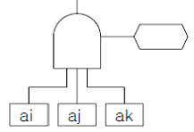
- 억제 게이트
- 부정 게이트
- 배타적 OR 게이트
- 우선적 AND 게이트
(정답률: 69%)
23. 인간과 기계의 기본 기능은 감지, 정보저장, 정보처리및 의사결정, 행동으로 구분할 수 있는데 다음 중 행동 기능에 속하는 것은?
- 음파탐지기
- 추론
- 결심
- 음성
(정답률: 64%)
24. 눈의 구조에서 0.2 ~ 0.5mm 의 두께가 얇은 암흑갈색의 막으로 색소세포가 있어 암실처럼 빛을 차단하면서 망막 내면을 덮고 있는 것은?
- 각막
- 맥락막
- 중심와
- 공막
(정답률: 50%)
25. 다음 중 연구 기준의 요건에 대한 설명으로 옳은 것은?
- 적절성 : 반복 실험시 재현성이 있어야 한다.
- 신뢰성 : 측정하고자 하는 변수 이외의 다른 변수의 영향을 받아서는 안된다.
- 무오염성 : 의도된 목적에 부합하여야 한다.
- 민감도 : 피실험자 사이에서 볼 수 있는 예상 차이점에 비례하는 단위로 측정해야 한다.
(정답률: 66%)
26. 생산, 보전, 시험, 운반, 저장, 비상탈출 등에 사용되는 인원, 설비에 관하여 위험을 동정(同定)하고 제어하며, 그들의 안전요건을 결정하기 위하여 실시하는 분석 기법은?
- 운용 및 지원 위험분석(O&SHA)
- 사상수 분석(ETA)
- 결함사고 분석(FHA)
- 고장형태 및 영향분석(FMEA)
(정답률: 60%)
27. 다음 중 경쾌하고 가벼운 느낌에서 느리고 둔한 색의 순서로 바르게 나열된 것은?
- 백색 - 황색 - 녹색 - 자색
- 녹색 - 황색 - 적색 - 흑색
- 청색 - 자색 - 적색 - 흑색
- 황색 - 자색 - 녹색 - 청색
(정답률: 53%)
28. 어떤 전자기기의 수명은 지수분포를 따르며, 그 평균 수명은 10000시간이라고 한다. 이 기기를 연속적으로 사용할 경우 10000시간동안 고장없이 작동할 확률은?
- 1-e-1
- e-1
- 1/2
- 1
(정답률: 61%)
29. 다음 FT도에서 각 요소의 발생확률이 요소 ①과 요소 ②는 0.2, 요소 ③은 0.25, 요소 ④는 0.3 일 때 A 사상의 발생확률은 얼마인가?
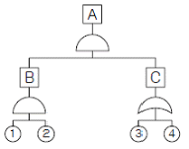
- 0.007
- 0.014
- 0.019
- 0.071
(정답률: 62%)
30. 다음 중 인간이 기계보다 우수한 측면이 아닌 것은?
- 완전히 새로운 해결책을 찾을 수 있다.
- 주위의 예기치 못한 상황을 감지할 수 있다.
- 반복적인 작업을 신뢰성 있게 수행할 수 있다.
- 관찰을 통해서 일반화하여 귀납적으로 추리할 수 있다.
(정답률: 79%)
31. FMEA의 표준적인 실시절차를 다음과 같이 나눌 때 2단계의 내용과 관계가 없는 것은?
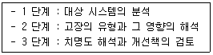
- 고장 등급의 평가
- 고장형의 예측과 설정
- 상위 아이템의 고장영향의 검토
- 기능 블록도와 신뢰성 블록도의 작성
(정답률: 65%)
32. 부분집합 A, B, C 가 "A + (B・C)"의 관계를 갖는다고 할 때 이와 동일한 것은?
- (A + B)・(A + C)
- A・B + A・C
- A・(B・C)
- A + (B - C)
(정답률: 54%)
33. 다음 그림과 같이 3개의 부품이 병렬로 이루어진 시스템의 전체 신뢰도는 약 얼마인가? (단, 원 안의 값은 각 부품의 신뢰도이다.)
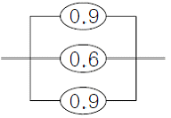
- 0.694
- 0.744
- 0.826
- 0.996
(정답률: 71%)
34. 다음 중 실효온도(Effective Temperature)에 대한 설명으로 틀린 것은?
- 기온 및 기류에 의하여 정해진다.
- 실제로 감각되는 온도로서 실감온도라고 한다.
- 체온계로 입안의 온도를 측정하여 기준으로 한다.
- 상대습도 100% 일 때의 건구온도에서 느끼는 것과 동일한 온감이다.
(정답률: 68%)
35. 다음 중 정보의 전달에 있어서 청각장치보다 시각장치를 사용해야 하는 경우로 옳은 것은?
- Message 가 간단할 때
- Message 가 즉각적인 행동을 요구하지 않을 때
- Message 가 후에 재참조되지 않을 때
- Message 가 시간적인 사상을 다룰 때
(정답률: 71%)
36. 부품 배치의 원칙 중 부품의 일반적 위치 내에서의 구체적인 배치를 결정하기 위한 기준이 되는 것은?
- 중요성의 원칙과 사용빈도의 원칙
- 사용빈도의 원칙과 기능별 배치의 원칙
- 기능별 배치의 원칙과 사용 순서의 원칙
- 사용빈도의 원칙과 사용 순서의 원칙
(정답률: 32%)
37. 25cm 거리에서 글자를 식별하기 위하여 2디옵터(Diopter)안경이 필요하였다. 동일한 사람이 1m 의 거리에서 글자를 식별하기 위하여는 몇 디옵터의 안경이 필요하겠는가?
- 3
- 4
- 5
- 6
(정답률: 32%)
38. 시스템 위험분석 기법 중 고장형태 및 영향분석(FMEA)에서 고장 등급의 평가요소에 해당되지 않는 것은?
- 기능적 고장 영향의 중요도
- 영향을 미치는 시스템의 범위
- 고장발생의 빈도
- 고장의 영향 크기
(정답률: 50%)
39. 다음 중 신뢰성과 보전성 개선을 목적으로 한 효과적인 보전기록자료로 볼 수 없는 것은?
- 설비이력카드
- 자재관리표
- MTBF분석표
- 고장원인대책표
(정답률: 60%)
40. C/D비(Control-Display ratio)가 크다는 것의 의미로 옳은 것은?
- 미세한 조종은 쉽지만 수행시간은 상대적으로 길다.
- 미세한 조종이 쉽고 수행시간도 상대적으로 짧다.
- 미세한 조종이 어렵고 수행시간도 상대적으로 길다.
- 미세한 조종은 어렵지만 수행시간은 상대적으로 짧다.
(정답률: 52%)
3과목: 기계위험방지기술
41. 지름이 D(mm)인 연삭기 숫돌의 회전수가 N(rpm)일 때 숫돌의 원주속도를 옳게 표시한 식은?
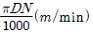
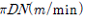
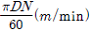
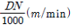
(정답률: 78%)
42. 유해・위험기계・기구 중에서 진동과 소음을 동시에 수반하는 기계설비로 가장 거리가 먼 것은?
- 컨베이어
- 사출 성형기
- 아세틸렌 용접장치
- 공기 압축기
(정답률: 63%)
43. 중량물을 인력운반(순수하게 사람의 힘으로 운반)시 일반 성인남성(19세~35세)이 일시작업(시간당 2회 이하)을 수행해야 하는 경우 중량물의 허용권장기준은?
- 25kg
- 30kg
- 27kg
- 15kg
(정답률: 37%)
44. 로봇의 작동범위 내에서 그 로봇에 관하여 교시 등(로봇의 동력원을 차단하고 행하는 것을 제외한다.)의 작업을 행하는 때 작업시작 전 점검 사항으로 옳은 것은?
- 과부하방지장치의 이상 유무
- 압력제한 스위치 등의 기능의 이상 유무
- 외부전선의 피복 또는 외장의 손상 유무
- 권과방지장치의 이상 유무
(정답률: 68%)
45. 산업안전보건법상 프레스 작업을 할 때에 작업시작 전점검항목으로 볼 수 없는 것은?
- 금형 및 고정볼트의 상태
- 회전부의 덮개 또는 울의 상태
- 클러치 및 브레이크의 기능
- 방호장치의 기능
(정답률: 54%)
46. 선반의 방호장치(안전장치)로 볼 수 없는 것은?
- 칩 브레이커
- 마그네틱 척
- 급정지 브레이크
- 실드(덮개)
(정답률: 60%)
47. 롤러기에서 앞면 롤러의 표면속도가 30 m/min 이상일 경우 급정지 거리는?
- 앞면 롤러 원주의 1/2.5 이내
- 앞면 롤러 원주의 1/3.0 이내
- 앞면 롤러 원주의 1/3.5 이내
- 앞면 롤러 원주의 1/4.0 이내
(정답률: 73%)
48. 보기와 같은 안전수칙을 적용해야 하는 수공구는?
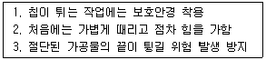
- 스패너
- 정
- 쇠톱
- 줄
(정답률: 79%)
49. 산업안전기준에 관한 규칙 중 아세틸렌 용접장치의 안전 조치의 기준으로서 알맞은 것은?
- 아세틸렌 발생기로부터 3m 이내, 발생기실로부터 5m 이내에는 흡연, 화기 사용금지
- 아세틸렌 발생기로부터 3m 이내, 발생기실로부터 4m 이내에는 흡연, 화기 사용금지
- 아세틸렌 발생기로부터 4m 이내, 발생기실로부터 3m 이내에는 흡연, 화기 사용금지
- 아세틸렌 발생기로부터 5m 이내, 발생기실로부터 3m 이내에는 흡연, 화기 사용금지
(정답률: 66%)
50. 그림과 같이 목재가공용 둥근톱 기계에서 분할날(t2) 두께가 4.0mm 일 때 톱날과의 관계로 옳은 것은?
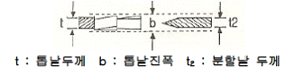
- b > 4.0mm, t ≤ 3.6mm
- b > 4.0mm, t ≤ 4.0mm
- b < 4.0mm, t ≤ 4.4mm
- b > 4.0mm, t ≥ 3.6mm
(정답률: 63%)
51. 산소-아세틸렌 가스용접에 의해 발생되는 재해와 거리가 가장 먼 것은?
- 화재
- 폭발
- 화상
- 안염
(정답률: 79%)
52. 초음파를 이용한 초음파 탐상 시험 방법의 종류에 속하지 않는 것은?
- 펄스 반사법
- 자장법
- 투과법
- 공진법
(정답률: 52%)
53. 연삭숫돌을 사용하는 작업의 안전수칙으로 잘못된 것은?
- 작업시작 전 1분 이상, 연삭숫돌을 교체한 후 3분이상 시운전을 통해 이상 유무를 확인한다.
- 회전중인 모든 연삭숫돌에는 반드시 덮개를 설치하여야 한다.
- 연삭숫돌의 최고사용회전속도를 초과하여 사용해서는 안된다.
- 측면을 사용하는 목적으로 하는 연삭숫돌 이외는 측면을 사용해서는 안된다.
(정답률: 61%)
54. 완전회전식 클러치 기구가 있는 동력프레스에서 양수기동식 방호장치의 안전거리는 얼마 이상이어야 하나? (단, 확동클러치의 봉합개소의 수는 8개, 분당 행정수는 250spm을 가진다.)
- 240mm
- 360mm
- 400mm
- 420mm
(정답률: 50%)
55. 용접장치에서 안전기의 설치 기준에 관한 설명으로 틀린 것은?
- 아세틸렌 용접장치의 안전기는 취관에 미설치인 경우 주관 및 취관에 가장 근접한 분기관마다 설치한다.
- 아세틸렌 용접장치의 안전기는 가스용기와 발생기가 분리되어 있는 경우 발생기와 가스용기 사이에 설치한다.
- 가스집합 용접장치의 안전기는 주관 및 분기관에 안전기를 설치하며, 이 경우 하나의 취관에 2개 이상의 안전기를 설치한다.
- 가스집합 용접장치의 안전기 설치는 화기사용 설비로 부터 3m 이상 격리 설치한다.
(정답률: 63%)
56. 와이어로프의 안전율을 계산하는 공식은? (단, S = 안전율, Q = 최대사용하중, N = 로프의 가닥수,P = 와이어로프의 파단하중)
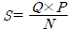
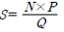
- S=N×Q×P
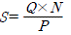
(정답률: 70%)
57. 일반적으로 장갑을 착용하고 해야 하는 작업은?
- 드릴작업
- 선반작업
- 용접작업
- 밀링작업
(정답률: 80%)
58. 동력프레스기 중 hand in die 방식의 프레스기에서 사용하는 방호대책에 해당하는 것은?
- 자동프레스의 도입
- 전용프레스의 도입
- 가드식 방호장치
- 안전울을 부착한 프레스
(정답률: 65%)
59. 다음 ( )안의 (ㄱ), (ㄴ)에 알맞은 것은?
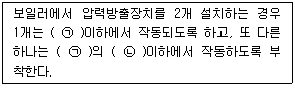
- (ㄱ) 평균사용압력, (ㄴ) 1.⑤배
- (ㄱ) 평균사용압력, (ㄴ) 1.10배
- (ㄱ) 최고사용압력, (ㄴ) 1.⑤배
- (ㄱ) 최고사용압력, (ㄴ) 1.10배
(정답률: 71%)
60. 다음 ( ) 안에 들어갈 용어로 알맞은 것은?
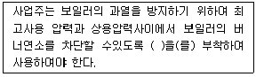
- 고저수위조절장치
- 압력방출장치
- 압력제한스위치
- 파열판
(정답률: 74%)
4과목: 전기위험방지기술
61. 피뢰기의 제한 전압이 752kV이고 변압기의 기준 충격절연 강도가 1⑤0kV이라면, 보호 여유도는 약 몇 [%] 인가?
- 18%
- 30%
- 40%
- 43%
(정답률: 57%)
62. 전류가 흐르는 상태에서 단로기를 끊었을 때 여러 가지 파괴작용을 일으킨다. 다음 그림에서 유입차단기의 차단순위와 투입순위가 안전수칙에 적합한 것은?
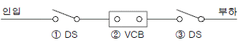
- 차단 ① → ② → ③, 투입 ① → ② → ③
- 차단 ② → ③ → ①, 투입 ② → ③ → ①
- 차단 ③ → ② → ①, 투입 ③ → ① → ②
- 차단 ② → ③ → ①, 투입 ③ → ① → ②
(정답률: 72%)
63. 통전 경로별 위험도를 나타낸 경우 위험도가 큰 순서로 옳은 것은?
- 왼손-오른손 > 왼손-등 > 양손-양발 > 오른손-가슴
- 왼손-오른손 > 오른손-가슴 > 왼손-등 > 양손-양발
- 오른손-가슴 > 양손-양발 > 왼손-등 > 왼손-오른손
- 오른손-가슴 > 왼손-오른손 > 양손-양발 > 왼손-등
(정답률: 51%)
64. 고압활선 근접작업과 관련하여 다음 ( ㉮ ), ( ㉯ )에 들어갈 내용으로 알맞은 것은?
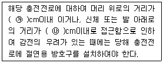
- ㉮ 30, ㉯ 60
- ㉮ 45, ㉯ 45
- ㉮ 30, ㉯ 30
- ㉮ 60, ㉯ 60
(정답률: 74%)
65. 다음 중 정전작업시 조치사항으로 부적합한 것은?
- 개로된 전로의 충전여부를 검전기구에 의하여 확인 한다.
- 개폐기에 시건장치를 하고 통전금지에 관한 표지판은 제거한다.
- 예비 동력원의 역송전에 의한 감전의 위험을 방지하기 위한 단락접지 기구를 사용하여 단락 접지를 한다.
- 잔류 전하를 확실히 방전한다.
(정답률: 77%)
66. 자기방전식 제전기의 특징으로 옳지 않은 것은?
- 아세테이트 필름의 권취공정, 셀로판제조공정에 유용하다.
- 코로나 방전을 일으켜 공기를 이온화 하는 것을 이용한 것이다.
- 정상상태에서 방전현상은 수반하나 착화하는 경우는 없지만 본체가 금속이므로 접지를 하여야 한다.
- 제전능력이 작아서 충분한 제전시간이 필요하며, 특히 이동하는 물체의 제전에는 부적합하다.
(정답률: 47%)
67. 가로등의 접지전극을 지면으로부터 75cm 이상 깊은 곳에 매설하는 주된 이유는?
- 전극의 부식을 방지하기 위하여
- 접지선의 단선을 방지하기 위하여
- 접촉 전압을 감소시키기 위하여
- 접지 저항을 증가시키기 위하여
(정답률: 62%)
68. 공기 중의 분진 중 발화점[℃]이 가장 낮은 것은?
- 에폭시
- 텔레프탈산
- 철
- 유황
(정답률: 49%)
69. 지구를 고립한 지구도체라 생각하고 1[C]의 전하가 대전되었다면 지구 표면의 전위는 대략 몇 [V] 인가? (단, 지구의 반경은 6367km 이다.)
- 1414V
- 2828V
- 9×104V
- 9×10⁹V
(정답률: 49%)
70. 다음 중 정전기 발생에 영향을 주는 요인으로 볼 수 없는 것은?
- 물체의 특성
- 물체의 표면상태
- 물체의 이력
- 접촉시간
(정답률: 51%)
71. 심실세동전류
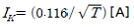
인체의 저항(Rb)1000[Ω], 지표상층 저항율(Rs)을 100[Ω・m], 고정시간(T)을 1초로 하는 경우 허용 접촉 전압은 약 몇 [V] 인가?- 45V
- 90V
- 133V
- 190V
(정답률: 57%)
72. 폭발위험장소의 분류 중 인화성 액체의 증기 또는 인화성 가스에 의한 폭발위험이 지속적으로 또는 장기간 존재하는 장소는 몇 종 장소로 분류되는가?
- 0종 장소
- 1종 장소
- 2종 장소
- 3종 장소
(정답률: 64%)
73. 다음 ( ) 안에 들어갈 내용으로 알맞은 것은?
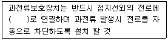
- 직렬
- 병렬
- 직병렬
- 직렬 또는 병렬
(정답률: 74%)
74. 전자, 통신기기의 전자파장해(EMI)를 일으키는 노이즈와 이를 방지하기 위한 조치로서 그 연결이 적절하지 않은 것은?
- 전도노이즈 - 접지대책실시
- 전도노이즈 - 차폐대책실시
- 방사노이즈 - 차폐대책실시
- 방사노이즈 - 접지대책실시
(정답률: 48%)
75. 다음 중 접지의 목적으로 볼 수 없는 것은?
- 낙뢰에 의한 피해방지
- 송배전선, 고전압 모선 등에서 지락사고의 발생시 보호 계전기를 신속하게 작동시킴
- 설비의 절연물이 손상되었을 때 흐르는 누설전류에 의한 감전방지
- 송배전선로의 지락사고시 대지전위의 상승을 억제하고 절연강도를 상승시킴
(정답률: 57%)
76. 다음에서 전기기기 방폭의 기본개념과 이를 이용한 방폭구조로 볼 수 없는 것은?
- 점화원의 격리 - 내압(耐壓)방폭구조
- 전기기기 안전도의 증강 - 안전증 방폭구조
- 폭발성 위험분위기 해소 - 유입방폭구조
- 점화능력의 본질적 억제 - 본질안전방폭구조
(정답률: 62%)
77. 전폐형의 구조로 되어 있으며, 외부의 폭발성 가스가 내부로 침입해서 폭발하였을 때 고열가스나 화염이 협격을 통하여 서서히 방출시킴으로써 냉각되는 방폭구조는?
- 내압 방폭구조
- 유입 방폭구조
- 압력 방폭구조
- 안전증 방폭구조
(정답률: 59%)
78. 다음 중 이탈전류에 대한 설명으로 가장 알맞은 것은?
- 충전부에 접촉했을 때 근육이 수축을 일으켜 자연히 이탈되는 전류의 크기이다.
- 손발을 움직여 충전부로부터 이탈할 수 있는 전류를 말한다.
- 누전에 의해 전류가 선로로부터 이탈되는 전류로서 측정기를 통해 측정 가능한 전류를 말한다.
- 충전부에 사람이 접촉했을 때 누전차단기가 작동하도록 설정한 전류의 값을 말한다.
(정답률: 70%)
79. 교류 아크용접기의 허용사용율[%]은? (단, 정격사용율 10%, 2차정격전류는 400A, 교류아크용접기의 사용전류는 200A이다.)
- 40%
- 50%
- 60%
- 70%
(정답률: 57%)
80. 다음 중 감전예방을 위한 보호구의 종류에 속하지 않는 것은?
- 안전모
- 안전장갑
- 절연시트
- 안전화
(정답률: 60%)
5과목: 화학설비위험방지기술
81. 메탄(CH4)이 공기 중에서 연소될 때의 이론혼합비(화학양론조성)는 약 몇 vol% 인가?
- 2.21
- 4.03
- 5.76
- 9.50
(정답률: 36%)
82. 공정안전보고서 중 공정안전자료에 포함하여야 할 세부내용에 해당하는 것은?
- 비상조치계획
- 공정위험평가서
- 각종 건물・설비 배치도
- 도급업체 안전관리계획
(정답률: 47%)
83. 다음 중 마그네슘의 저장 및 취급에 관한 설명으로 틀린 것은?
- 산화제와 접촉을 피한다.
- 상온의 물에서는 안정하지만, 고온의 물이나 과열 수증기와 접촉하면 격렬히 반응한다.
- 분진폭발성이 있으므로 누설되지 않도록 포장한다.
- 고온에서 유황 및 할로겐과 접촉하면 흡열반응을 한다.
(정답률: 43%)
84. 다음 중 압력차에 의하여 유량을 측정하는 가변류 유량계가 아닌 것은?
- 오리피스 미터(orifice meter)
- 벤튜리 미터(ventri meter)
- 로타 미터(rota meter)
- 피토 튜브(pitot tube)
(정답률: 57%)
85. 산업안전보건법상 특수화학설비 설치시 반드시 필요한 장치가 아닌 것은?
- 원재료 공급의 긴급차단장치
- 즉시 사용할 수 있는 예비동력원
- 화재시 긴급대응을 위한 자동소화장치
- 온도계・유량계・압력계 등의 계측장치
(정답률: 39%)
86. 위험물 또는 위험물이 발생하는 물질을 가열・건조하는 건조설비 중 건조실을 설치하는 건축물의 구조를 독립된 단층건물로 해야 하는 기준으로 틀린 것은? (단, 건조실은 내화구조물이 아닌 건축물 내에 있다.)
- 위험물을 가열・건조하는 경우 가열・건조기의 내용적이 10m3 이상인 건조설비
- 위험물이 아닌 물질을 가열・건조하는 경우 고체 또는 액체 연료의 최대 사용량이 10kg/h 이상인 건조설비
- 위험물이 아닌 물질을 가열・건조하는 경우 기체 연료의 사용량 1m3 /h 이상인 건조설비
- 위험물이 아닌 물질을 가열・건조하는 경우 전기사용정격용량이 10kW 이상인 건조설비
(정답률: 46%)
87. 인화성 가스 혼합물을 구성하는 각 성분의 조성과 연소범위가 다음 [표]와 같을 때 혼합가스의 연소하한값은 약몇 vol% 인가?
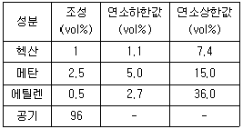
- 2.51
- 7.51
- 12.07
- 15.01
(정답률: 54%)
88. 탱크로리, 드럼 등에 주입 작업시 미리 그 내부의 가스나 증기를 불황성 가스로 바꾸는 등 안전한 상태를 확인한후 작업하여야 하는 물질이 아닌 것은?
- 산화에틸렌
- 아세트알데히드
- 산화프로필렌
- 인산
(정답률: 49%)
89. 다음 중 소화설비와 주된 소화적용방법의 연결이 옳은 것은?
- 스프링클러설비 - 억제소화
- 포소화설비 - 질식소화
- 이산화탄소소화설비 - 제거소화
- 할로겐화합물소화설비 - 냉각소화
(정답률: 65%)
90. 다음 중 분해폭발을 일으키는 물질이 아닌 것은?
- 산화에틸렌
- 에탄
- 에틸렌
- 히드라진
(정답률: 35%)
91. 다음 중 안전간격에 대한 설명으로 옳은 것은?
- 외측의 가스점화시 내측의 폭발성 혼합가스까지 화염이 전달되는 한계의 틈이다.
- 외측의 가스점화시 내측의 폭발성 혼합가스까지 화염이 전달되지 않는 한계의 틈이다.
- 내측의 가스점화시 외측의 폭발성 혼합가스까지 화염이 전달되는 한계의 틈이다.
- 내측의 가스점화시 외측의 폭발성 혼합가스까지 화염이 전달되지 않는 한계의 틈이다.
(정답률: 51%)
92. 다음 중 증기운 폭발에 대한 설명으로 옳은 것은?
- 폭발효율은 BLEVE 보다 크다.
- 증기운의 크기가 증가하면 점화 확률이 높아진다.
- 증기운 폭발의 방지대책으로 가장 좋은 방법은 점화 방지용 안전장치의 설치이다.
- 증기와 공기의 난류 혼합, 방출점으로부터 먼 지점에서 증기운의 점화는 폭발의 충격을 감소시킨다.
(정답률: 49%)
93. 연소의 형태 중 확산연소의 정의로 가장 적절한 것은?
- 고체의 표면이 고온을 유지하면서 연소하는 현상
- 가연성 가스가 공기 중의 지연성 가스와 접촉하여 접촉면에서 연소가 일어나는 현상
- 가연성 가스와 지연성 가스가 미리 일정 농도로 혼합된 상태에서 점화원에 의하여 연소되는 현상
- 액체 표면에서 증발하는 가연성 증기가 공기와 혼합하여 연소범위 내에서 열원에 의하여 연소하는 현상
(정답률: 54%)
94. 다음 [표]의 가스를 위험도가 큰 것부터 작은 순으로 나열한 것은?
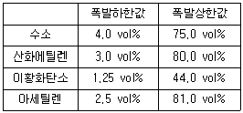
- 아세틸렌 - 산화에틸렌 - 이황화탄소 - 수소
- 아세틸렌 - 산화에틸렌 - 수소 - 이황화탄소
- 이황화탄소 - 아세틸렌 - 수소 - 산화에틸렌
- 이황화탄소 - 아세틸렌 - 산화에틸렌 - 수소
(정답률: 62%)
95. 다음 중 산업 안전보건법령상 아세틸렌 용접장치를 사용하여 금속의 용접・용단 또는 가열작업을 하는 경우 게이지 압력은 얼마를 초과하는 압력의 아세틸렌을 발생시켜 사용 하여서는 아니 되는가?
- 98kPa
- 127kPa
- 147kPa
- 196kPa
(정답률: 72%)
96. 다음 중 산업안전보건법상 위험물의 종류와 해당 물질의 연결이 옳은 것은?
- 폭발성 물질 : 마그네슘분말
- 물반응성 물질 및 인화성 고체 물질 : 중크롬산
- 산화성 물질 : 니트로소화합물
- 인화성 가스 : 에탄
(정답률: 49%)
97. 산업안전보건법상 인화성가스의 정의에서 폭발한계농도 기준으로 옳은 것은?
- 공기와 혼합하여 인화되는 범위에 있는 가스
- 상・하한의 차가 10% 이상인 가스
- 폭발한계농도의 하한이 20% 이하인 가스
- 상ㆍ하한의 차가 10% 이하인 가스
(정답률: 43%)
98. 다음 중 주수소화를 하여서는 아니 되는 물질은?
- 금속분말
- 적린
- 유황
- 과망간산칼륨
(정답률: 57%)
99. 다음 중 관의 지름을 변경하는데 사용되는 관의 부속품으로 가장 적절한 것은?
- 엘보우(Elbow)
- 커플링(Coupling)
- 유니온(Union)
- 리듀서(Reducer)
(정답률: 69%)
100. 20℃, 1기압의 공기를 5기압으로 단열압축하면 공기의 온도는 약 몇 ℃ 가 되겠는가?(단, 공기의 비열비는 1.4 이다.)
- 32
- 191
- 3⑤
- 464
(정답률: 61%)
6과목: 건설안전기술
101. 다음 중 지게차의 작업시작 전 점검사항이 아닌 것은?
- 권과방지장치, 브레이크, 클러치 및 운전장치 기능의 이상 유무
- 하역장치 및 유압장치 기능의 이상 유무
- 제동장치 및 조종장치 기능의 이상 유무
- 전조등・후미등・방향지시기 및 경보장치 기능의 이상 유무
(정답률: 64%)
102. 굴착공사에 있어서 비탈면붕괴를 방지하기 위하여 행하는 대책이 아닌 것은?
- 지표수의 침투를 막기 위해 표면배수공을 한다.
- 지하수위를 내리기 위해 수평배수공을 설치한다.
- 비탈면하단을 성토한다.
- 비탈면 상부에 토사를 적재한다.
(정답률: 73%)
103. 인체가 감전되었을 때 그 위험도에 영향을 미치는 요소에 대한 설명으로 옳지 않은 것은?
- 인체의 통전전류가 클수록 위험성은 커진다.
- 같은 크기의 전류에서는 감전시간이 길 경우에 위험성은 커진다.
- 같은 전류의 크기라도 심장으로 전류가 흐를 때 위험성은 커진다.
- 상용주파수의 교류전원보다 직류전원이 더 위험하다.
(정답률: 73%)
104. 건설현장에서 사용하는 임시조명기구에 대한 안전대책으로 옳지 않은 것은?
- 모든 조명기구에는 외부의 충격으로부터 보호될 수 있도록 보호망을 씌워야 한다.
- 이동식 조명기구의 배선은 유연성이 좋은 코드선을 사용해야 한다.
- 이동식 조명기구의 손잡이는 견고한 금속재료로 제작해야 한다.
- 이동식 조명기구를 일정한 장소에 고정시킬 경우에 는 견고한 받침대를 사용해야 한다.
(정답률: 68%)
1⑤. 가설계단 및 계단참을 설치하는 때에는 매 m2당 몇kg이상의 하중에 견딜 수 있는 강도를 가진 구조로 설치하여야 하는가?
- 200kg
- 300kg
- 400kg
- 500kg
(정답률: 52%)
106. 크레인을 사용하는 경우 작업시작 전에 점검하여야 하는 사항에 해당하지 않는 것은?
- 권과방지장치ㆍ브레이크ㆍ클러치 및 운전장치의 기능
- 주행로의 상측 및 트롤리가 횡행하는 레일의 상태
- 와이어로프가 통하는 곳의 상태
- 붐의 경사 각도
(정답률: 59%)
107. 일반적인 콘크리트의 압축강도는 표준양생을 실시한 재령 며칠을 기준으로 하는가?
- 7일
- 21일
- 28일
- 30일
(정답률: 55%)
108. 안전대의 종류는 사용구분에 따라 벨트식과 안전그네식으로 구분되는데 이 중 안전그네식에만 적용하는 것으로 나열한 것은?
- 1개 걸이용, U자 걸이용
- 1개 걸이용, 추락방지대
- U자 걸이용, 안전블록
- 추락방지대, 안전블록
(정답률: 50%)
109. 건설공사 중 물체의 낙하 또는 비래에 의하여 재해가 발생할 위험이 있을 때 이에 대한 방지대책으로 가장 거리가 먼 것은?
- 낙하물 방지망 또는 방호선반을 설치한다.
- 출입금지구역을 설정하여 출입통제를 한다.
- 안전난간을 설치한다.
- 보호구를 착용하고 작업하도록 한다.
(정답률: 55%)
110. 흙막이 지보공을 설치하였을 때 정기적으로 점검하여 이상 발견시 즉시 보수하여야 할 사항이 아닌 것은?
- 굴착 깊이의 정도
- 버팀대의 긴압의 정도
- 부재의 접속부・부착부 및 교차부의 상태
- 부재의 손상・변형・부식・변위 및 탈락의 유무와 상태
(정답률: 66%)
111. 하역운반기계에 화물을 적재하거나 내리는 작업을 할때 작업지휘자를 지정해야 하는 경우는 단위화물의 무게가 몇 kg 이상일 때인가?
- 100kg
- 150kg
- 200kg
- 250kg
(정답률: 52%)
112. 롤러의 표면에 돌기를 만들어 부착한 것으로 풍화암을 파쇄하고 흙 속의 간극수압을 제거하는 작업에 적합한 장비는?
- Tandem roller
- Macadam roller
- Tamping roller
- Tire roller
(정답률: 67%)
113. 10cm 그물코인 방망을 설치한 경우에 망 밑부분에 충돌 위험이 있는 바닥면 또는 기계설비와의 수직거리는 얼마이상이어야 하는가? (단, L(1개의 방망일 때 단변방향길)=12m, A(장변방향 방망의 지지간격)=6m)
- 10.2m
- 12.2m
- 14.2m
- 16.2m
(정답률: 39%)
114. 통나무비계를 사용할 때 벽연결은 수직방향에서 몇 미터 이하로 하여야 하는가?
- 3m 이하
- 4.5m 이하
- 5.5m 이하
- 7.5m 이하
(정답률: 52%)
115. 그림과 같이 두 곳에 줄을 달아 중량물을 들어올릴때, 힘 P의 크기에 관한 설명으로 옳은 것은?
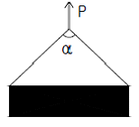
- 매단 줄의 각도(α)가 0° 일 때 최소가 된다.
- 매단 줄의 각도(α)가 60° 일 때 최소가 된다.
- 매단 줄의 각도(α)가 120° 일 때 최소가 된다.
- 매단 줄의 각도(α)와 상관없이 모두 같다.
(정답률: 48%)
116. 타워크레인의 설치・조립・해체작업을 하는 때에 작성하는 작업계획서에 포함시켜야 할 사항이 아닌 것은?
- 타워크레인의 종류 및 형식
- 중량물의 운반 경로
- 작업인원의 구성 및 작업근로자의 역할범위
- 작업도구・장비・가설설비 및 방호설비
(정답률: 43%)
117. 굴착공사에서 경사면의 안정성을 확인하기 위한 검토사항에 해당되지 않는 것은?
- 지질조사
- 토질시험
- 풍화의 정도
- 경보장치 작동상태
(정답률: 72%)
118. 다음 중 가설통로의 설치 기준으로 옳지 않은 것은?
- 경사는 30° 이하로 한다.
- 경사가 10°를 초과하는 경우에는 미끄러지지 않는 구조로 한다.
- 추락위험이 있는 장소에는 안전난간을 설치한다.
- 건설공사에서 사용되는 높이 8m 이상인 비계다리에는 7m 이내마다 계단참을 설치한다.
(정답률: 70%)
119. 크레인 또는 데릭에서 붐각도 및 작업반경별로 작용시킬 수 있는 최대하중에서 후크(Hook), 와이어로프 등 달기구의 중량을 공제한 하중은?
- 작업하중
- 정격하중
- 이동하중
- 적재하중
(정답률: 73%)
120. 철골공사시 사전 안전성 확보를 위해 공작도에 반영하여야 할 사항이 아닌 것은?
- 주변 고압전주
- 외부비계받이
- 기둥승강용 트랩
- 방망 설치용 부재
(정답률: 44%)